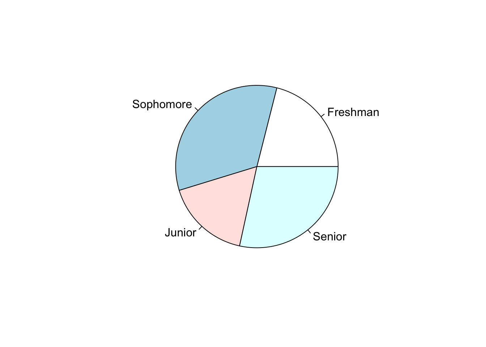
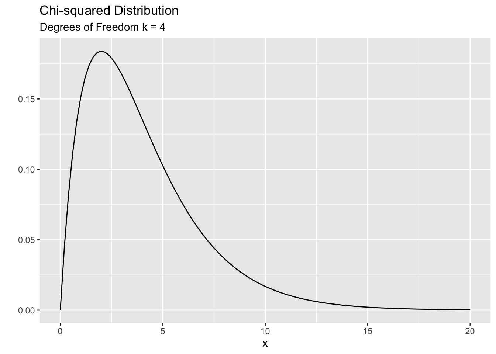
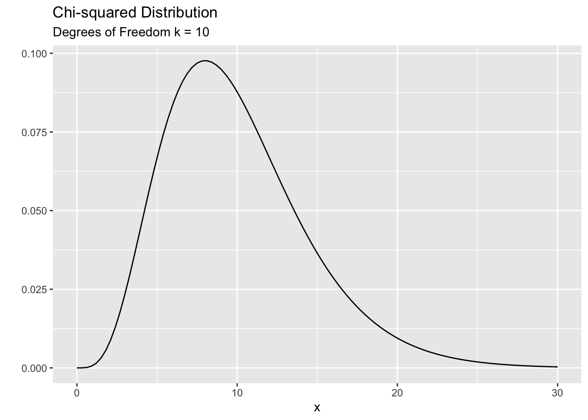
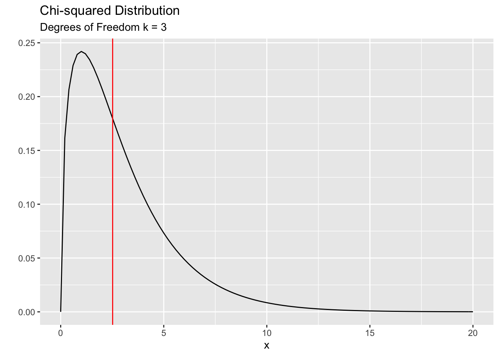
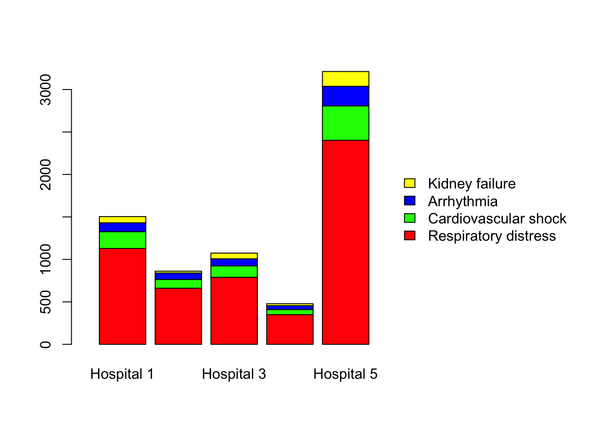
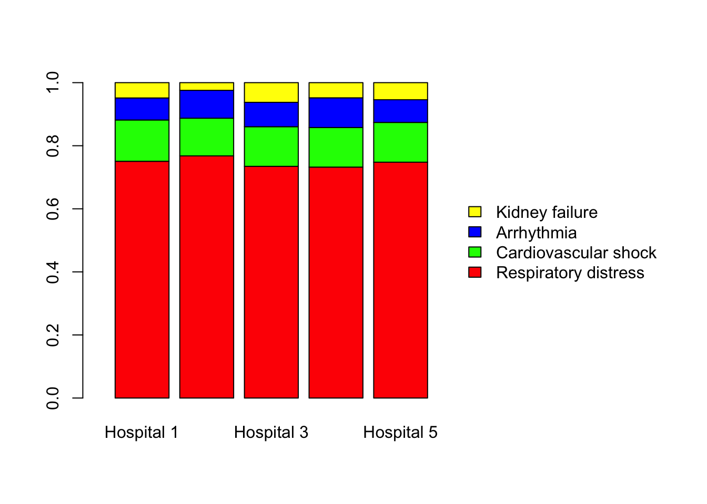
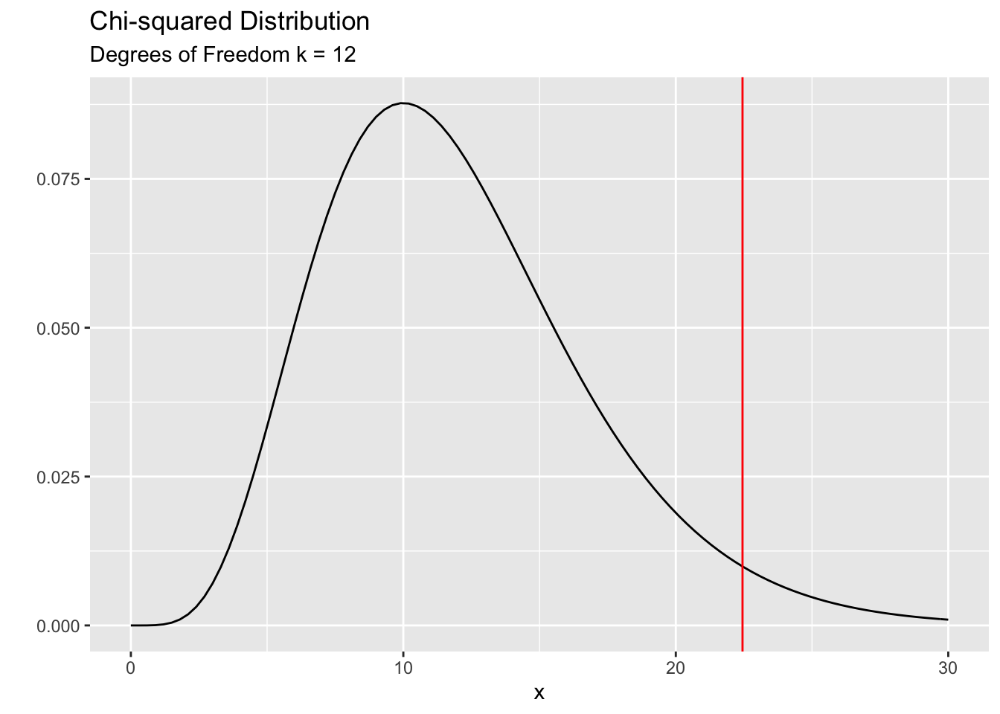
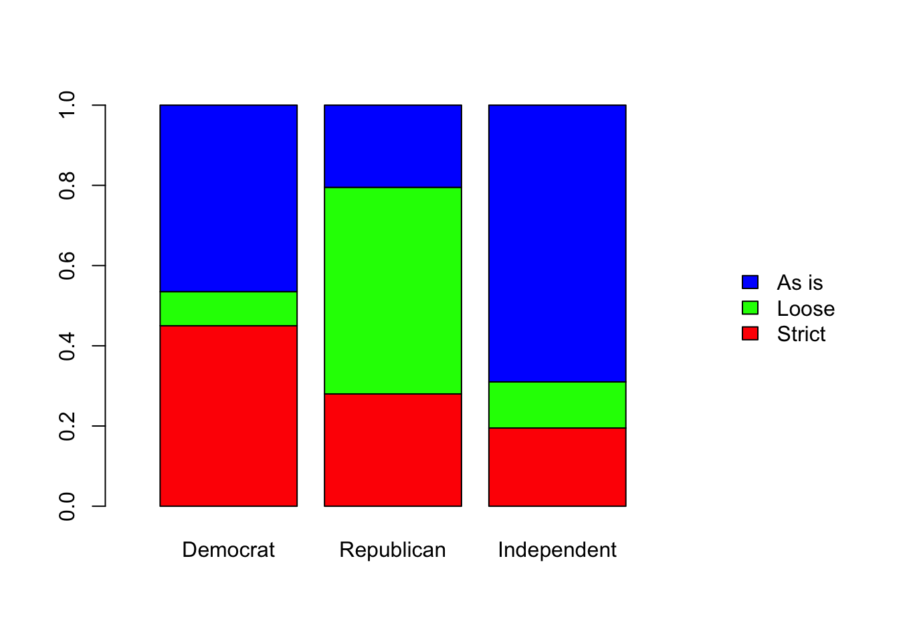

Chapter 7 Chi-Squared Test and its Variants
The Chi-Squared test is one of most popular hypothesis tests in applied statistics. Researchers from many disciplines use this test in their day to day work. It is easy to use and learn. Let’s dive in.
The Chi-Squared test comes in three flavors.
- Goodness of Fit Test
- Test of Homogeneity
- Test of Independence
7.1 Goodness of Fit Test
As the name implies, this test checks whether a given set of data conforms to (fit) a prespecified distribution. Consider the following example:
Example:
The following data is from a survey of Hamilton students conducted in 2016. The counts are survey respondents in each class year.
class_frq <- c("Freshman" = 20,
"Sophomore" = 32,
"Junior" = 16,
"Senior" = 27)
class_frq## Freshman Sophomore Junior Senior
## 20 32 16 27pie(class_frq)
| Class Year | Count | Percent |
|---|---|---|
| Freshman | 20 | 21.1% |
| Sophomore | 32 | 33.7% |
| Junior | 16 | 16.8% |
| Senior | 27 | 28.4% |
Now, you might wonder, hmmmmm…, did we actually over sample two class years (seniors and sophomores) and under-sampled the other two classes or could this be due to chance variation? We can try to answer this by using the one sample proportions test on each group. That is we can conduct four hypothesis tests as follows.
| Test 1 | Test 2 | Test 3 | Test 4 |
|---|---|---|---|
| \(H_0: p_{freshman} = 0.25\) | \(H_0: p_{sophomore} = 0.25\) | \(H_0: p_{junior} = 0.25\) | \(H_0: p_{senior} = 0.25\) |
| \(H_1: p_{freshman} \neq 0.25\) | \(H_1: p_{sophomore} \neq 0.25\) | \(H_1: p_{junior} \neq 0.25\) | \(H_1: p_{senior} \neq 0.25\) |
A question: Can you think why the above approach is not very good?
I’ll let you ponder on this question. For the time being, let’s agree to not to use the above approach. So, what else can be done? This where the Chi squared goodness of fit test comes in to play. What we wanted to test is whether the student body in our college is evenly distributed between the 4 class years. The Chi squared test approach this issue in a slightly different way.
\(H_0:\)
Proportion of freshmen = 1/4
Proportion of sophomores = 1/4
Proportion of juniors = 1/4
Proportion of seniors = 1/4\(H_1:\)
The students are not evenly distributed between class years.So, IF the null hypothesis were true, out of the 95 students we’d expect about 95/4 (on average) falls into each class year give or take (with some random variation). For example, in our sample, we’d EXPECT about 23 (95/4) students to have come from each class year. We can then compare these expected counts with the actual OBSERVED counts. Consider the following table:
| Class Year | Observed Count | Expected Count | Difference |
|---|---|---|---|
| Freshman | 20 | 23.75 | -3.75 |
| Sophomore | 32 | 23.75 | 8.25 |
| Junior | 16 | 23.75 | -7.75 |
| Senior | 27 | 23.75 | 3.25 |
The Chi-squared test aggregate these differences in to a single number. We call it the Chi-squared test statistic. Here’s how it aggregates:
\[ Chi-squared\ Test\ Statistic:\ X^2 = \sum_{sum\ over\ groups} \frac{(Observed - Expected)^2}{Expected} \]
Now you may have couple of questions:
Question 1: Why do we square the difference between observed and expected counts?
If you simply add the differences the positive differences and negative differences will cancel one another. As a result we’ll end up with a zero as the final answer. That is not helpful. We need a way to aggregate the differences in a meaningful way. By squaring and adding them up we can overcome the cancellation issue. Also, it acts as a weight function. That is, smaller differences contribute less and larger differences contribute more to the final outcome. So you can think of the test statistic as a weighted average of squared deviations.
Question 2: Why do we divide by the expected count?
| Case 1 | Case 2 |
|---|---|
| Observed = 10 | Observed = 100 |
| Expected = 5 | Expected = 95 |
In both cases, the difference is 5. But we see that 5 is a substantial deviation for Case 1 than it is for Case 2. A better approach is to look at the relative difference. That is to calculate the difference between the observed and expected counts relative to what we’d expect, hence we divide by the expected count.
There is another answer to the above questions using the Poisson distribution. But we haven’t studied the Poisson distribution in our intro courses so I will not get into that.
Now let’s see how to do this in R.
Command to run the test
my_chisq_test <- chisq.test(x = class_frq, p = c(1/4,1/4,1/4,1/4))
my_chisq_test##
## Chi-squared test for given probabilities
##
## data: class_frq
## X-squared = 6.4316, df = 3, p-value = 0.0924As you can see, you’ll get the Chi-squared test statistic and the corresponding p-value. How did they come up with the p-value? To answer this question, we need to go all the way back to 1900. Karl Pearson was the man who invented this method in a paper in 1900. He proved that, IF the null hypothesis were true, the sampling distribution of the above test statistic follows a Chi-squared distribution. So what is this Chi-squared distribution?
The Chi-squared distribution is used to model positive values. The smallest value you can have is zero. It is a skewed distribution (mostly). The shape (and skewness) is governed by a parameter called the ‘degree of freedom’ parameter’ ( denoted by \(k\) ). It is a positive integer. For smaller \(k\) you see a lot of skewness and for large \(k\) the distribution becomes more symmetric. The mean of the distribution is equal to \(k\) and the variance is \(2k\). Here are two examples:

Now let’s look back at our problem. We found that the corresponding Chi-squared value for the class year data is 6.43. Is this value a likely one or an unlikely one? To answer that question, we need to compare this value against a Chi-squared distribution. But, which distribution are we going to use? We need to know the \(k\) (degrees of freedom) parameter corresponds to our test statistic. In his paper in 1900 Karl Pearson figured out that the correct value of \(k\) is related to the number of groups that we are comparing. He proved that \(k = ( \# \ of \ groups \ - 1 )\). Therefore, in our case we need to work with a Chi-squared distribution with \(k=3\). The following plot show the correct distribution with the vertical line indicating the observed value of the Chi-squared test statistics (6.43) for the class year data. Do you think that this value is a likely value under the null hypothesis or is it unlikely?
The observed value of 6.43 is somewhat in the unlikely region. We can calculate exactly the probability of observing 6.43 (or more) and that is nothing but the p-value. The p-value = 0.09. It is kind of ‘small’. Perhaps not that small to be considered as unlikely. This is where we need to dig deeper into the data. The following commands will help us put things in perspective before we jump in to make a decision about the p-value.
Display the observed counts
my_chisq_test$observed## Freshman Sophomore Junior Senior
## 20 32 16 27Display the expected counts
my_chisq_test$expected## Freshman Sophomore Junior Senior
## 23.75 23.75 23.75 23.75Display the residuals (standardized, i.e. z-score)
## Freshman Sophomore Junior Senior
## -0.7694838 1.6928643 -1.5902664 0.6668859We can make use of the residuals to help us reveal more about the data and the corresponding p-value. First we need to define what these residuals are.
\[ residuals \ = \ \frac{Observed - Expected}{\sqrt{Expected}} \]
You can think of them as Z-scores. For example, for sophomores, the observed count is 1.69 standard deviations above the expected count. For juniors, the observed count is 1.59 standard deviations below the expected count. Any residual value larger than 2 (roughly) is considered ‘unusual’. In this case non of the residuals are above 2, but they give us an important clue about the nature of the data. Consider the following dialog:
You Can you explain why the residual value is somewhat high (1.69) for sophomores?
Researcher: Given the context, I think they may have over-sampled the sophomores which explains the large positive residual.
You: I still don’t get it. Why would they over-sample?
Researcher: Well, this course is mainly taken by students who have had some prior Statistics background (College Intro Stats or AP stats). So typically we tend to have more sophomores and juniors in the class. Since the survey was done by the students in the class, they tend to interview members of their own class year hence the over-representation.
You: OK, but what about the juniors? Why do they have an under-representation? The residual for juniors is negative (-1.59) which indicates that there is an under-representation. But your argument above suggests that they must over-sample the juniors too because the class is generally taken by more sophomores and juniors. I’m confused.
Researcher: That is a good point. But in this case, we have a different explanation. You see, in our college, a considerable number of juniors tend to study abroad. As a result we always have an under-representation of the juniors on-campus in each year. Therefore, any on-campus survey would have a low representation of juniors.
You: I see, that makes sense. But now I have a different question. Didn’t we assume (in the null hypothesis) that the class years are evenly distributed? According to what you just said, shouldn’t we be testing a different hypothesis which matches the reality of on-campus class distribution?
Researcher: You are absolutely right. We should use the correct expected percentages in our null hypothesis. Let’s redo the analysis together.
The correct expected on-campus class percentages are slightly different from 25%. The following table shows the enrollment numbers at the beginning of that academic year (source: Hamilton College Registrar’s office).
| Class Year | Percentage |
|---|---|
| Freshman | 25.9% |
| Sophomore | 27.8% |
| Junior | 19.6% |
| Senior | 26.7% |
Perform the test again and examine the residuals
my_chisq_test2 <- chisq.test(x = class_frq, p = c(.259, .278, .196, .267))
my_chisq_test2##
## Chi-squared test for given probabilities
##
## data: class_frq
## X-squared = 2.5191, df = 3, p-value = 0.4718my_chisq_test2$residuals## Freshman Sophomore Junior Senior
## -0.9283633 1.0877463 -0.6071716 0.3246387As you can see, the Chi-squared value is much smaller (2.52 compared to 6.43 earlier) hence the p-value is much larger ( p- val = 0.43 vs. p-val = 0.09 earlier). The following plot shows the observed Ch-squared value is quite likely under the null hypothesis.

So what is our conclusion? We can say “there is not enough evidence to say that the observed counts differ significantly from we’d reasonably expect.”. In other words, the students have done a good job in getting a representative sample from the college. The apparent disparities in the observed counts is simply a result of chance variation.
Let’s look at another example.
Example:
The main issue we are investigating here is racial disparity is jury selection in Alameda county in northern California. In 2010, the American Civil Liberties Union (ACLU) found large disparities in the racial makeup of the selected jurors in Alameda county. The data is from a jury pool of 1395 individuals. Our task is to see whether these disparities can be attributed to chance. In other words, we ask the familiar question: “Could this be due to chance?”
First, let’s look at the data. The following table shows the counts of jurors from each racial group.
| Race | Observed Count |
|---|---|
| White | 780 |
| Black | 117 |
| Hispanic | 114 |
| Asian | 384 |
We would like to compare these counts or (percentages) to the racial distribution of eligible jurors of that county. The following table summarizes the racial makeup of the eligible population of Alameda county in 2010.
| Race | Eligible Percent |
|---|---|
| White | 54% |
| Black | 18% |
| Hispanic | 12% |
| Asian | 16% |
Following what we did with class year example we can use the Chi-squared test to see whether there is an unusual disparity in the observed and the expected counts.
Perform the test and examine the residuals
juror_counts <- c('White' = 780,
'Black' = 117,
'Hispanic' = 114,
'Asian' = 384)
jury_chisq_test <- chisq.test(x = juror_counts, p = c(.54, .18, .12, .16))
jury_chisq_test##
## Chi-squared test for given probabilities
##
## data: juror_counts
## X-squared = 205.44, df = 3, p-value < 2.2e-16jury_chisq_test$observed## White Black Hispanic Asian
## 780 117 114 384jury_chisq_test$expected## White Black Hispanic Asian
## 753.3 251.1 167.4 223.2jury_chisq_test$residuals## White Black Hispanic Asian
## 0.9728083 -8.4626313 -4.1272762 10.7631390The Chi-squared value is 205 which means the p-value is essentially zero. Hence we can safely say that observed counts are highly unlikely under the assumption of the racial makeup (of the eligible jurors) in Alameda county . Does this mean that there is racial discrimination in selecting jurors? We need to be very careful here. This test only allow us to safely rule out random chance as a plausible explanation. However, this allow us to push the local authorities for an alternative explanation for the disparities we see in the data. In addition, we should ALWAYS examine the residuals. They provide a richer picture of the data, something that we can’t get with the p-value. This is a very important point to keep in mind. In ANY analysis, the p-value is not the end, it is in fact the beginning of a long journey (analysis).
The residuals from the above test reveal an interesting pattern. All minorities have residuals that are quite large (larger than 2 in magnitude). In particular, Blacks and Hispanics are underrepresented (8 and 4 SD’s below the expected counts respectively) while the Asians were over-represented by a huge margin (10 SD’s above the expected count!). These are vital pieces of information when we try to answer the racial discrimination question.
Summary
The Chi-squared goodness fit test helps us to test whether a given set of counts conforms to (fit) a prespecified distribution.
The test statistic \(X^2\) has a Chi-squared distribution with \((k-1)\) degrees of freedom under the null hypothesis where \(k\) is the number of groups in the data. Large values of the test statistic provides evidence against the null hypothesis.
ALWAYS look at the residuals of the test to get a better understanding of the data. Don’t just look at p-value. Remember, p-values are like mosquitoes! :)
7.2 Test of Homogeneity
This is second variation of the Chi-squared test. The main purpose of this test is to test whether samples taken from several populations or entities have a similar distribution. In other words, this is sort of like doing the goodness-of-fit test ( what we just studied above) across multiple populations. Let’s look at an example.
Example: Suppose we have five samples from 5 major hospitals in NYC. We wanted to see whether COVID-19 virus complication rates are similar in these five hospitals.
| Hospital 1 | Hospital 2 | Hospital 3 | Hospital 4 | Hospital 5 | |
|---|---|---|---|---|---|
| Respiratory distress | 1129 | 661 | 789 | 350 | 2402 |
| Cardiovascular shock | 197 | 103 | 135 | 60 | 405 |
| Arrhythmia | 105 | 76 | 83 | 45 | 231 |
| Kidney failure | 73 | 21 | 67 | 23 | 174 |
# Create a table with 4 rows and 5 columns
covid <- matrix(0, nrow = 4, ncol = 5)
# Name the rows and columns of the table
rownames(covid) <- c('Respiratory distress',
'Cardiovascular shock',
'Arrhythmia',
'Kidney failure')
colnames(covid) <- c('Hospital 1','Hospital 2','Hospital 3','Hospital 4','Hospital 5')
# Fill in each column with the corresponding data
covid[ , 1] <- c(1129, 197, 105, 73)
covid[ , 2] <- c(661, 103, 76, 21)
covid[ , 3] <- c(789, 135, 83, 67)
covid[ , 4] <- c(350, 60, 45, 23)
covid[ , 5] <- c(2402, 405, 231, 174)
# Simple bar chart
barplot(covid,
col = c('red','green','blue', 'yellow'),
legend.text = TRUE,
args.legend = list(bty = 'n', x ='right', ncol = 1),
xlim = c(0,10))
# Note 1: In the above command legend.text' = TRUE means include the legend.
# args.legend = list(...stuff...) gives additional parameters for the legend.
# bty = 'n' means no border aroind the legend
# x = 'right' means position of the lenged
# ncol = 1 means the number of columns in the legend.
# Note 2: This is not the most efficient way to plot barcharts.
# Using ggplot() is far better. But, I chose this approach because
# having the data as a matrix, rather than a dataframe helps us do the
# Chi-squared test quickly, which is the main goal of this chapter. The above plot is somewhat misleading. As you can see, the y-axis represents the counts. So, if the sample sizes are unequal, which is the case in our study, it is difficult to compare the distributions across the hospitals. Therefore we need to calculate the percentages of these disease categories so we can have a meaningful comparison of the hospitals. Consider the following plot. You can now easily compare the 5 hospitals. The distributions seem quite similar to the naked eye with some unequal parts. So you might ask, “could these apparent dissimilarities be a result of chance?”. This is where statistics is needed to discern whether the disease distributions are actually similar across the 5 hospitals.
# Percentage bar chart -- margin = 2 means that we compute column percentages.
covid_proportions <- prop.table(covid, margin = 2)
barplot(covid_proportions,
col = c('red','green','blue', 'yellow'),
legend.text = TRUE,
args.legend = list(bty = 'n', x ='right', ncol = 1),
xlim = c(0,10))
First we need to state our hypothesis. Our null hypothesis is that the distributions are identical across the 5 hospitals. We can denote this as follows:
\(H_0:\)
\(P_{Respir|1} = P_{Respir|2} = \ \ \ldots \ldots \ldots = P_{Respir|5} = P_{CommonR}\)
\(P_{Cardio|1} = P_{Cardio|2} = \ \ \ldots \ldots \ldots = P_{Cardio|5} = P_{CommonC}\)
\(P_{Arrhyth|1} = P_{Arrhyth|2} = \ \ \ldots \ldots \ldots = P_{Arrhyth|5} = P_{CommonA}\)
\(P_{Kidney|1} = P_{Kidney|2} = \ \ \ldots \ldots \ldots = P_{Kidney|5} = P_{CommonK}\)
\(H_1:\) The distributions are not similar across the 5 hospitals
Now we need to to use the null hypothesis to find the expected counts for each disease.
The null hypothesis states that there is no difference between the hospitals when it comes to the proportion of patients in each complication category. Therefore, we can pool the observed counts to estimate a common proportion for each category as follows:
| Total | Percent | |
|---|---|---|
| Respiratory distress | 5331 | 74.78% |
| Cardiovascular shock | 900 | 12.62% |
| Arrhythmia | 540 | 7.58% |
| Kidney failure | 358 | 5.02% |
Now we can ask, what fraction of cases from each hospital would we expect to see in each disease category. To complete this calculation we also need the total sample sizes of each hospital. The table below shows how many patients we sampled from each hospital.
| Hospital 1 | Hospital 2 | Hospital 3 | Hospital 4 | Hospital 5 | |
|---|---|---|---|---|---|
| Total cases sampled | 1504 | 861 | 1074 | 478 | 3212 |
Now we have all the ingredients to calculate the expected counts in each category and for each hospital. For example, the sample size of hospital 1 was 1504. So we’d expect about 74.78% of these cases to be in the category of ‘Respiratory distress’. That is,
Expected count in respiratory distress in Hospital 1 = 1504 * 0.7478 = 1124.69
Likewise we can calculate the expected counts for each category in hospital 1. Then repeat the same process for hospital 2 and so on. You might now wonder: : “Do we have to do this by hand?”. Of course not. We will use R to do all the heavy lifting. Before that I’d like to point out an important fact on calculating the expected counts. Let’s consider the above calculation with hospital 1 data. Note that the percentage of “Respiratory distress” was calculated by dividing the total cases in that category (across all hospitals) by the grand total which was 7129. So we can rewrite the calculation as follows:
Expected count in respiratory distress in Hospital 1 \[ = 1504 * 0.7478 \] \[ = 1504 * \frac{5331}{7129}\]
If you look at this above expression carefully you will see that the expected count only depends on 3 things from the original data table.
- The column total (1504, the total cases in that hospital)
- The row total (5331, the total cases in respiratory distress across all hospitals)
- The grand total.
The expected count for any hospital and disease category can be written as:
\[ Expected \ Count \ = \ \frac{Row\ Total\ *\ Column\ Total}{Grand\ Total}\]
Perform the test
mycovid_test <- chisq.test(covid)
mycovid_test##
## Pearson's Chi-squared test
##
## data: covid
## X-squared = 22.449, df = 12, p-value = 0.03278As you can see from the plot below the observed value of the Chi-squared test statistics (22.449) is in the unlikely region. How unlikely? About 3%. How do we interpret this p-value?

The next thing that we should ALWAYS do is to examine the residuals.
mycovid_test$residuals| Hospital 1 | Hospital 2 | Hospital 3 | Hospital 4 | Hospital 5 | |
|---|---|---|---|---|---|
| Respiratory distress | 0.129 | 0.676 | -0.498 | -0.394 | 0.002 |
| Cardiovascular shock | 0.517 | -0.546 | -0.050 | -0.044 | -0.025 |
| Arrhythmia | -0.836 | 1.335 | 0.183 | 1.461 | -0.789 |
| Kidney failure | -0.291 | -3.382 | 1.779 | -0.205 | 1.000 |
Recall that these residuals are in the form of z-scores. That is, they tell you how far off the observed counts from the expected in terms of standard deviation units. Therefore, any residual that is larger than 2 is deemed unusual. When you examine the table above, you’ll notice something very interesting. None of the residuals seem “large” except the last value in Hospital 2. The residual value is -3.38 which tells us that, in Hospital 2, the number of observed kidney failures is 3.38 SD’s BELOW the expected value (under the assumptions that all hospitals have the same proportion in each disease category). This is a very important finding. There can be two plausible explanations for this unusual occurrence:
Maybe the patients who get admitted to Hospital 2 already have kidney related issues or maybe more susceptible to kidney failures.
Maybe Hospital 2 was doing something “right” (or different from others) when it comes to handling COVID-19 patients which led to lower than expected kidney failures.
Possibility 1 seems a bit unlikely because these data come from random samples across NYC, so it is unlikely that ALL the kidney patients tend to cluster in one geographical area. Nonetheless, the doctors and health officials can (and should) check this by going through patient records. If we can verify that they DO NOT have any history of kidney related issues and don’t seem to have a special susceptibility to kidney failures then we can then move on to possibility 2. If Hospital 2 is doing something “right” it can share this knowledge with other hospitals so that they can try it on their patients and hopefully it MIGHT lead to similar (favorable) outcomes. We need to stress here that this is something we have do with utmost care, because these findings don’t necessarily mean that whatever Hospital 2 is doing is the CAUSE of the low kidney failure counts that we observed. It is only a CORRELATION. As we always say in this course, domain knowledge is key in any real life situation. We, the statisticians, can only report our findings in an easily understandable way. The rest is up to the experts in the relevant field. Let’s hope that they do the right thing!
let’s look at another example to solidify our understanding.
Example:
Suppose you are interested in public opinion on gun laws in the state of New York. You also are interested whether these opinions tend to be similar (or different) across political party affiliations. You decided to use a telephone survey (typical means of doing public opinion surveys) to gather your data. Before collecting the data you got a list of registered Democrats, Republicans and Independents in the state of NY. You can make a freedom of information act request here : https://www.elections.ny.gov/FoilRequests.html to obtain this information.
Now that you have a list of registered Democrats, Republicans and Independents, you can randomly pick say 200 from each group and call them to find out their opinions on gun laws. Suppose you conducted the survey successfully and obtained the following information.
| Democrat | Republican | Independent | |
|---|---|---|---|
| Need stricter gun laws | 90 | 56 | 39 |
| Need to loosen gun laws | 17 | 103 | 23 |
| Keep as is | 93 | 41 | 138 |
| 200 | 200 | 200 |
# Create a table with 3 rows and 3 columns
gun_opinion <- matrix(0, nrow = 3, ncol = 3)
# Name the rows and columns of the table
rownames(gun_opinion) <- c('Strict',
'Loose',
'As is')
colnames(gun_opinion) <- c('Democrat','Republican','Independent')
# Fill in each column with the corresponding data
gun_opinion[ , 1] <- c(90, 17, 93)
gun_opinion[ , 2] <- c(56, 103, 41)
gun_opinion[ , 3] <- c(39, 23, 138)
# Proportions bar chart
gun_opinion_proportions <- prop.table(gun_opinion, margin = 2)
barplot(gun_opinion_proportions,
col = c('red','green','blue'),
legend.text = TRUE,
args.legend = list(bty = 'n', x ='right', ncol = 1),
xlim = c(0,5))
As you can see the three distributions are no where near close to be similar. I don’t think we need to perform any statistical analysis on this because the differences across the parties are so large that random chance can not be a plausible explanation. But, in order to examine the residuals (something we should ALWAYS do) we need to run the test.
gun_opinion_test <- chisq.test(gun_opinion)
gun_opinion_test##
## Pearson's Chi-squared test
##
## data: gun_opinion
## X-squared = 170.58, df = 4, p-value < 2.2e-16gun_opinion_test$residuals## Democrat Republican Independent
## Strict 3.608049 -0.7216098 -2.886439
## Loose -4.441802 8.0145555 -3.572754
## As is 0.245049 -5.2160433 4.970994Does the residuals tell us anything interesting? One thing we immediately see is that ALL residuals except two values are larger than 2. We all know that Republicans tend to favor loose gun laws and Democrats favor tighter gun laws. We can clearly see that in the residuals. But the magnitudes are very different. Republicans are 8 standard deviations above the expected count for loose gun laws. It is a huge deviation compared to the Democrats in supporting stricter gun laws (3.6 SD’s from the expected).
I admit that the above example is not that interesting. However, I chose this example to compare and contrast an important point about data collection and how it effects our analysis. Let’s dive in.
7.3 Test of Independence
Example:
Look back at the previous example on gun laws. Notice how the data was collected in that example. It had two steps:
- Obtain a list of ALL registered voters.
- Then randomly sample 200 from each group (Dem, Rep, Ind).
Our primary goal was to see whether the groups are similar (homogeneous) in terms of their opinions on gun laws. We used the test of homogeneity to answer that question. The hypothesis is about the conditional probabilities of opinion given that the person is from a certain political party. That is:
\[ P_{Opinion\ |\ Dem} = P_{Opinion\ |\ Repub} = P_{Opinion\ |\ Ind}\]
The conditional aspect comes from the way we collected the data. In our data collection, we measured only one random variable, the opinion. What do I mean by that? When we collected the data, we would call a Democrat, for example, and ask him or her to provide their opinion on gun laws. So we already knew that the person we are calling is a Democrat. So it is not a random variable. But the opinion of that person is unknown to us at the time of the call. So the opinion is the ONLY random (unknown) quantity that we measured. Now let’s consider a different approach to data collection.
Rather than getting a list of ALL registered voters and sample from that list, what if we simply call 600 people via random digit dialing (the most typical method in opinion polls). At the time of the call we have no idea about TWO things:
- The party affiliation of the person
- Their opinion on gun laws.
So we measure TWO random variables and we are interested in the interplay between these two variables. That is, we want to know the dependence or independence of these two variables. Hence the name, test of independence.
Let us now see how to perform this test. Now that you’ve seen how a chi-squared test is done, let’s proceed with the relevant steps.
Step 1:
Define the null and the alternative hypotheses for the test.
\(H_0:\) The two variables (Party affiliation and Opinion) are independent: of each other.
\(H_1:\) The two variables are dependent.
Step 2:
Calculate the expected counts under the null hypothesis.
First, let’s look at the data table below. Our total sample size is 600 but the column totals are different from the previous example. We no longer have exactly 200 members selected from each group because when you randomly call 600 people you have no control over the totals in each group. Remember, we are measuring TWO random variables, Party and Opinion.
| Democrat | Republican | Independent | ||
|---|---|---|---|---|
| Need stricter gun laws | 88 | 41 | 37 | 166 |
| Need to loosen gun laws | 18 | 97 | 31 | 146 |
| Keep as is | 91 | 56 | 141 | 288 |
| 197 | 194 | 209 | 600 |
Suppose we need to compute the expected count for row 1, column 1 of the table below. In this case, it is Democrats who support stricter gun laws. Now we ask, out of the 600 people how many do we expect to be in this category IF the null hypothesis were true?
To find this we need to know (or estimate) the probability of a person being a Democrat AND support stricter gun laws if the null hypothesis were true. That is, we need \(P[\ Democrat\ AND\ Strict\ ]\) assuming that the two variables are independent. Recall from your intro stats the following result:
\[P[A \ and \ B] = P[A].P[B]\] if and only if the two events \(A\) and \(B\) are independent.
Using this, we can say, under the null hypothesis of independence
\[ P[\ Democrat\ AND\ Strict\ ] = P[\ Democrat\ ] .P[\ Strict\ ] \]
Then we can estimate the above probability as follows:
\[ P[\ Democrat\ ] = 197/600 \]
\[ P[\ Strict\ ] = 166/600 \]
Therefore, \[ P[\ Democrat\ AND\ Strict\ ] = \frac{197}{600}.\frac{166}{600} \]
No we can find, out of a 600 people how many would we expect to be in this category as follows:
\[ Expected \ Count \ = 600 * P[\ Democrat\ AND\ Strict\ ] = 600 . ( \frac{197}{600}.\frac{166}{600}) \]
If you examine above formula carefully you’ll notice that the expected count for any group and any opinion category can be written as:
\[ Expected \ Count \ = \ \frac{Row\ Total\ *\ Column\ Total}{Grand\ Total}\]
This is identical to the formula we had in the test of homogeneity. But we arrived at this via a different path (different hypothesis).
Step 3: Calculate the Chi-squared test statistic (\(X^2\)) and the associated p-value and interpret your findings in context.
# Fill in the table with the data
gun_opinion[ , 1] <- c(88, 18, 91)
gun_opinion[ , 2] <- c(41, 97, 56)
gun_opinion[ , 3] <- c(37, 31, 141)
# Perform the test
gun_opinion_test <- chisq.test(gun_opinion)
gun_opinion_test##
## Pearson's Chi-squared test
##
## data: gun_opinion
## X-squared = 141.47, df = 4, p-value < 2.2e-16Let’s look at another example before we end this chapter.
Example:
There is a growing concern that Black drivers get searched more (compared to Whites) in regular traffic stops. The ‘crime’ ironically called “Driving while Black”. The following dataset is a random sample of traffic stops in Cincinnati in 2002.
| Black | White | Other | |
|---|---|---|---|
| Searched? Yes | 813 | 293 | 19 |
| Searched? No | 787 | 594 | 27 |
Question: Is there any association between the driver’s race and being searched?
Let’s use the Chi-squared test of independence to answer this question. First, let us state the null and the alternative hypotheses.
\(H_0:\) The two variables, Race and Searched in a traffic top, are independent: of each other.
\(H_1:\) The two variables are dependent.
search_data <- matrix(0, nrow = 2, ncol=3)
rownames(search_data) <- c("Searched? Yes", "Searched? No")
colnames(search_data) <- c('Black', 'White', 'Other')
search_data[ , 1] <- c(813, 787)
search_data[ , 2] <- c(293, 594)
search_data[ , 3] <- c(19, 27)
search_test <- chisq.test(search_data)
search_test##
## Pearson's Chi-squared test
##
## data: search_data
## X-squared = 73.253, df = 2, p-value < 2.2e-16The p-value is essentially zero which indicates that IF race and subject to a search is INDEPENDENT then it is highly unlikely that we observed the counts in the above table. Therefore, we can conclude that there an ASSOCIATION between these two variables. However, we need to be super careful not to jump into a more stronger assertion like “There is a discrimination at traffic stops against black individuals” straight away. There might be many reasons behind this. To get a better understanding of the situation, let’s not forget to examine the residuals. It might shed more light into our analysis.
search_test$residual## Black White Other
## Searched? Yes 3.840584 -5.086104 -0.3164431
## Searched? No -3.432987 4.546322 0.2828593The value that jumps out is the -5.08 in the White group. This suggests that IF race and search are independent, then the 293 searches in the White group is 5 standard deviations BELOW the expected count. This is huge. Why is it that the White group experienced a significantly less number of searches?
On the other hand, the 813 searches in the Black group is about 4 standard deviations ABOVE the expected count. Why is the Black group experienced a significantly higher number of searches?
These are the kinds of analyses you’ll need when you want confront officials. Without these types of ammunition your case is weak. The p-value is not sufficient to convince other (reasonable) people, you need more. As I mentioned before, the p-value is not the end, it is the beginning of a long journey (analysis).
Summary
We’ve learned the three flavors of the Chi-Squared test.
Goodness of Fit Test (Check the distribution of a variable is in accordance to a per-specified distribution)
Test of Homogeneity ( Check whether the distribution of a variable is similar across several populations or groups)
Test of Independence ( Check whether TWO variables are correlated)
The process of carrying out the test can be summarized as follows:
Step 1: Define the null and the alternative hypotheses for the test.
Step 2: Calculate the expected counts under the null hypothesis.
Step 3: Calculate the Chi-squared test statistic (\(X^2\)) and the associated p-value. Interpret your findings in context.
Step 4: Examine the residuals to find out any other interesting facts about the data that may be hidden.